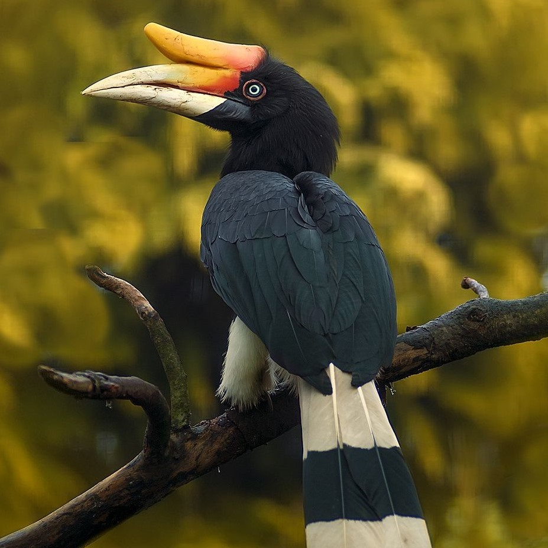

Flora & Fauna

Kalimantan adalah wilayah geografis (provinsi) di Indonesia yang sangat kaya dengan alam dan hasil buminya. Berbagai macam jenis flora dan fauna ada di wilayah seluas lebih dari 125 ribu kilometer persegi tersebut.
Namun, sayangnya, keberadaan dari beberapa spesies di Kalimantan sudah dalam keadaan yang memprihatinkan. Saat ini, bahkan populasi mereka sudah terancam hilang dari muka Bumi.
Selengkapnya